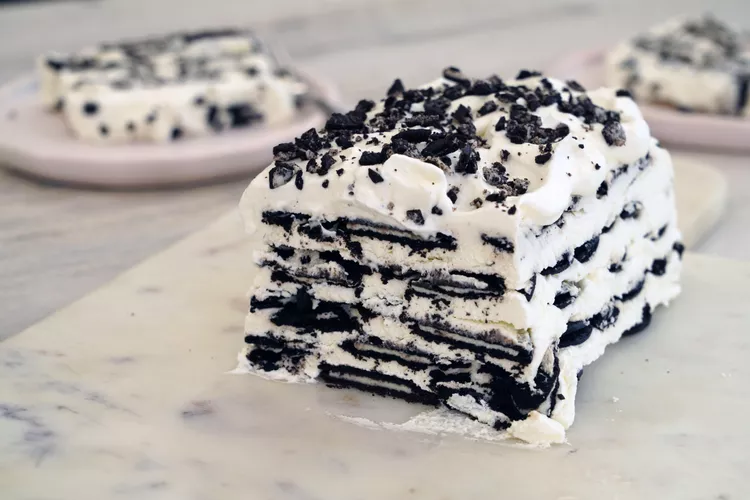

Easy Chocolate Icebox Cake

About:
You only need 5 easy ingredients to make this impressive icebox cake. Best to make it the day before you plan to serve it.
Ingredients:
- 3 cups heavy cream
- 1/2 cup confectioners' sugar
- 2 teaspoons vanilla extract
- 1 ½ (13.1 ounce) packages thin chocolate cream sandwich cookies, such as Oreo Thins
How to make this:
- Line an 8x4-inch loaf pan with plastic wrap, allowing the wrap to hang over the sides completely.
- Place cream in a large bowl and beat with an electric mixer on medium speed for 2 minutes. Add powdered sugar and vanilla extract; continue to beat until soft-medium peaks form. Reserve 1 cup of whipped cream and refrigerate until ready to use.
- Place a thin layer of whipped cream in the bottom of the prepared pan. Reserve 2 cookies for garnish. Add a layer of cookies over the cream, breaking any cookies as necessary to fill in any empty spaces; top with 1/4 of remaining cream. Top with another layer of cookies and another 1/4 of remaining cream. Repeat the process two more times until all the cream is used. Top with remaining cookies, pressing them into the cream.
- Wrap the plastic around the loaf and refrigerate at least 8 hours.
- Unwrap cake and invert onto a serving plate. Top cake with reserved whipped cream. Crush reserved 2 cookies and sprinkle on top as garnish; slice and serve as desired.
Return to homepage